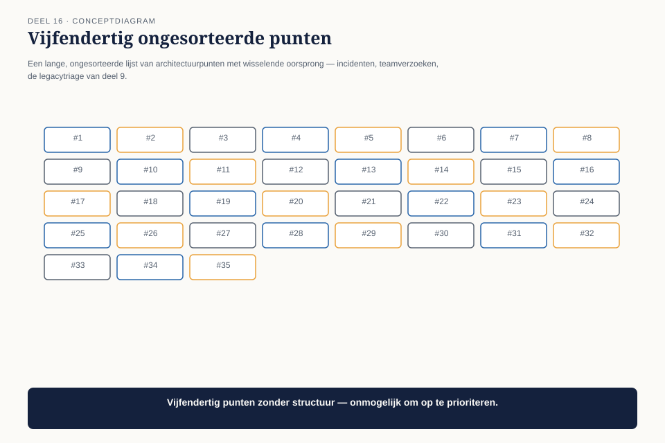
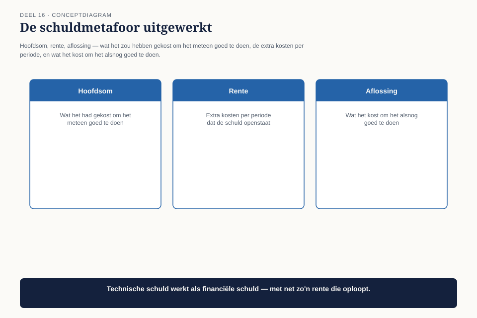
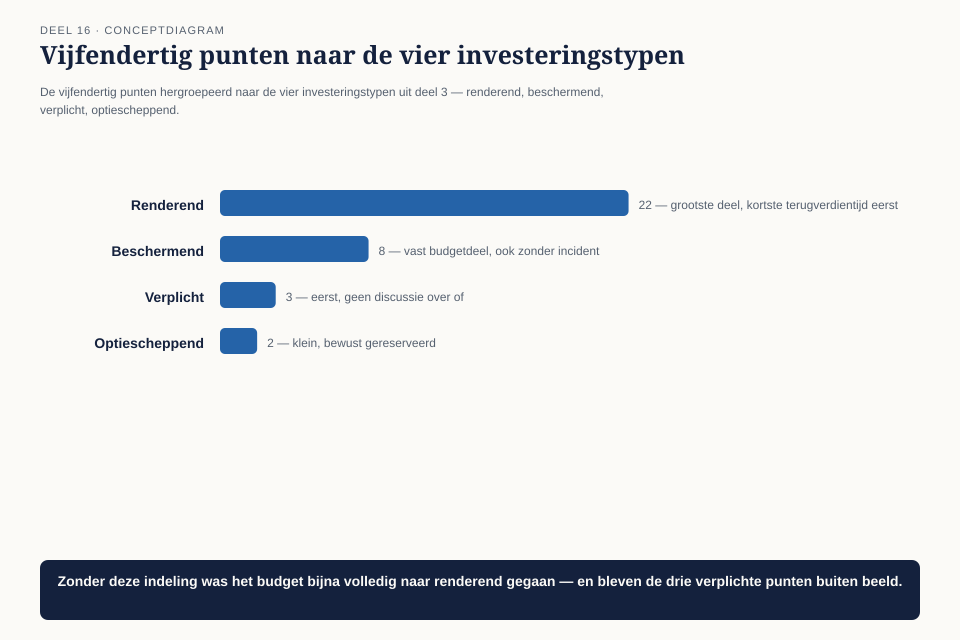
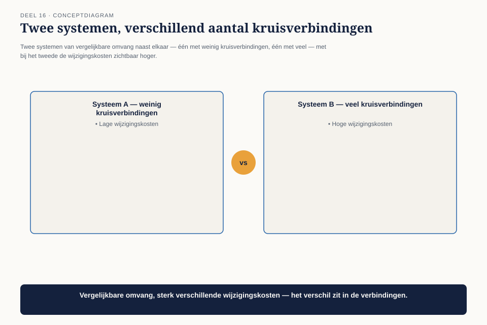
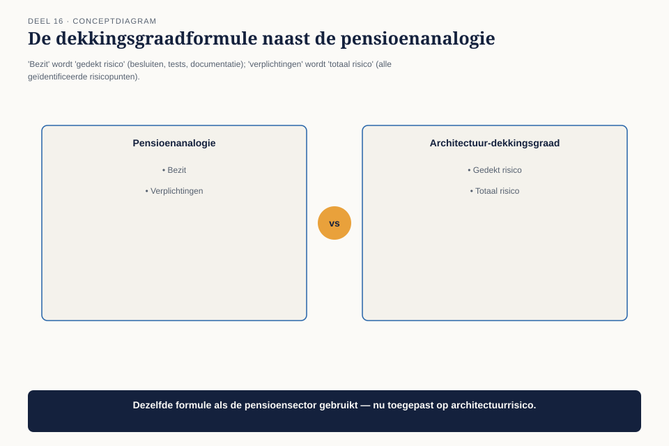

Cursus BTABoK · Niveau 2 (CITA-A) · Deel 16 van 30
Value model II
Deel 15 gaf de doorlopende praktijk van waarderen, meten en terugkoppelen. Dit deel voegt er vier begrippen aan toe die op portefeuilleniveau spelen — het niveau waarop niet één investering maar het geheel van alle architectuurkeuzes wordt gewogen: technische schuld, investeringsplanning, structurele complexiteit, en risicomethoden. Onderweg introduceren we een begrip dat in deze cursus een dubbele betekenis krijgt, ontleend aan de sector van de casus zelf: dekkingsgraad.
9secties
±2udagdeel + huiswerk
4controlevragen
6figuren
Positionering. Deze cursus bereidt je voor op de Iasa-certificeringen en is uitdrukkelijk géén vervanging van het officiële examen- en cursusmateriaal van Iasa.
Niveau 2: ❶ Het engagement model → ❷ Digital Customer → ❸ Digital Business → ❹ Digital Employee en Digital Operations → ❺ Value model I → ❻ Value model II (hier) → ❼ Operating model I → ❽ Operating model II → ❾ Governance en roadmap → ❿ Architectuurvolwassenheid → (11) Specialisatiekeuze → (12) Examentraining CITA-A en portfoliobeoordeling
01
Waar dit deel over gaat
⏱ 8 min
Deel 15 gaf de doorlopende praktijk van waarderen, meten en terugkoppelen. Dit deel voegt er vier begrippen aan toe die op portefeuilleniveau spelen — het niveau waarop niet één investering maar het geheel van alle architectuurkeuzes wordt gewogen: technische schuld, investeringsplanning, structurele complexiteit, en risicomethoden. Onderweg introduceren we een begrip dat in deze cursus een dubbele betekenis krijgt, ontleend aan de sector van de casus zelf: dekkingsgraad.
Aan het eind van dit deel kun je:
technische schuld in financiële termen uitleggen aan wie geen ontwikkelaar is;
een investeringsportefeuille van architectuurwerk indelen naar de vier typen uit deel 3, op programmaniveau;
de architectuur-dekkingsgraad van een systeem of programma bepalen;
een risicoregister bijhouden dat kans en impact uit deel 3 op portefeuilleniveau optelt.
02
De portefeuillevraag
⏱ 8 min
Na de presentatie aan de stuurgroep in deel 15 komt er een vervolgvraag, dit keer van Bart Hoekstra zelf: “Jullie hebben laten zien wat vijf afgeronde investeringen hebben opgeleverd. Ik wil weten: van alles wat er nog op de lijst staat — vijfendertig punten in totaal — waar moeten we volgend kwartaal ons geld aan uitgeven?”

Figuur 16-1 — een lange, ongesorteerde lijst van vijfendertig openstaande architectuurpunten, met wisselende oorsprong — sommige uit incidenten, sommige uit teamverzoeken, sommige uit de legacytriage van deel 9
Dit is een ander soort vraag dan deel 15 beantwoordde. Deel 15 ging over het verleden — wat is bewezen. Dit deel gaat over de toekomst — hoe kies je uit vijfendertig punten, met een budget dat er niet voor allemaal is.
03
Technische schuld als financieel begrip
⏱ 8 min
De eerste competentie herformuleert een term die te vaak los van zijn oorspronkelijke betekenis wordt gebruikt. Technische schuld is, zoals de metafoor zelf al zegt, een lening: je neemt nu een snellere, minder volledige oplossing, in ruil voor rente die je later betaalt.

Figuur 16-2 — de schuldmetafoor uitgewerkt — hoofdsom (wat het zou hebben gekost om het meteen goed te doen), rente (extra kosten per periode zolang de schuld openstaat), aflossing (wat het kost om het alsnog goed te doen)
Begrip
Betekenis
Bij het koppelvlak uit niveau 1
Hoofdsom
wat het zou hebben gekost om het destijds meteen goed te doen
de kosten van een tussenlaag in plaats van puntsgewijze integratie
Rente
extra kosten per periode zolang de schuld openstaat
het herstelwerk van 18.000-45.000 euro per jaar (deel 2-3)
Aflossing
wat het nu kost om het alsnog goed te doen
de reparatiekosten die uiteindelijk zijn goedgekeurd
Waarom deze metafoor werkt voor een niet-technisch publiek: iedereen begrijpt dat een lening met hoge rente op enig moment duurder is dan direct aflossen. Dat maakt de vraag “waarom lossen we dit niet af” beantwoordbaar in dezelfde taal als een financiële beslissing, in plaats van als een technisch verzoek dat op gevoel wordt beoordeeld.
De valkuil: niet alle technische schuld is slecht. Een lening afsluiten om een deadline te halen, met een bewust plan om af te lossen, is een legitieme financiële keuze — precies zoals het koppelvlak destijds onder tijdsdruk werd gebouwd (deel 7, het gereconstrueerde besluit). Het probleem ontstaat pas wanneer niemand weet dat de lening bestaat, of wanneer de rente jarenlang doorloopt zonder ooit te worden afgelost.
Controlevraag
Uit Werkboek deel 16, Opdracht 1 — De schuldmetafoor toepassen
1De schuldmetafoor toepassenToon antwoord
Individueel, 15 minuten
Neem een bekend voorbeeld van technische schuld uit je eigen werk. Vul in: wat was de hoofdsom (wat had het destijds moeten kosten om het meteen goed te doen), wat is de rente (wat kost het per periode dat de schuld openstaat), en wat zou de aflossing zijn (wat kost het nu om het alsnog goed te doen)?
Uitwerking
Geen modelantwoord. Verwacht patroon: de rente is vaak makkelijker te schatten dan de hoofdsom, omdat de rente zich herhaalt en dus zichtbaarder is (net als bij het koppelvlak in niveau 1). De hoofdsom vergt een schatting achteraf van wat “goed doen” destijds had gekost — vaak lastiger, maar niet onmogelijk met de basislijn/bandbreedte-techniek uit deel 3.
04
Investeringsplanning op portefeuilleniveau
⏱ 8 min
De tweede competentie schaalt de vier investeringstypen uit deel 3 (renderend, beschermend, verplicht, optiescheppend) op naar een complete lijst in plaats van één beslissing tegelijk.

Figuur 16-3 — de vijfendertig punten uit 16.2, hergroepeerd in vier kolommen naar type, met per kolom een streefverhouding van het beschikbare budget
Het instrument: de investeringsportefeuille. Voor elk van de vijfendertig punten: welk type is het, en wat is de bandbreedte van de waardering (deel 3)? Vervolgens verdeel je het beschikbare budget niet gelijk over alle punten, maar naar een bewuste verdeling over de vier typen.
Type
Kenmerk van een gezonde verdeling
Risico bij verwaarlozing
Verplicht
eerst afgehandeld, geen discussie over of, wel over hoe
boetes, het niet meer kunnen opereren binnen de vergunning
Beschermend
een vast percentage van het budget, ook als er dit kwartaal geen incident is geweest
het “stille” risico dat pas zichtbaar wordt bij een calamiteit
Renderend
het grootste deel, met de kortste terugverdientijden eerst
geen — dit is meestal vanzelf de focus
Optiescheppend
een klein, bewust gereserveerd deel
een organisatie die alleen op renderend stuurt, verliest op termijn haar vermogen om te reageren op onvoorziene kansen
De vijfendertig punten van Mutatieplatform blijken, na indeling, voor tweeëntwintig renderend te zijn, acht beschermend, drie verplicht, en twee optiescheppend. Zonder deze indeling zou het budget waarschijnlijk vrijwel volledig naar renderende punten zijn gegaan — ze zijn het makkelijkst te verdedigen — met als gevolg dat de drie verplichte punten (waaronder een rapportageverplichting aan de toezichthouder met een harde deadline) buiten beeld waren gebleven.
Controlevraag
Uit Werkboek deel 16, Opdracht 2 — De investeringsportefeuille
1De investeringsportefeuilleToon antwoord
In tweetallen, 25 minuten
Neem een lijst van tien (fictieve of echte) openstaande verbeterpunten uit je eigen werk. Deel ze in naar de vier typen (renderend, beschermend, verplicht, optiescheppend). Komt de verdeling overeen met de kenmerken van een gezonde verdeling uit 16.4? Welk type is ondervertegenwoordigd?
Uitwerking
Geen modelantwoord. Verwacht patroon, consistent met de casus: renderende punten domineren de meeste lijsten, en verplichte of beschermende punten zijn ondervertegenwoordigd — precies zoals bij Mutatieplatform vóór de indeling. Dat is de kernbevinding van de oefening: zonder bewuste indeling verdringt het makkelijkst te verdedigen type de rest.
05
Structurele complexiteit
⏱ 8 min
De derde competentie meet iets dat zelden expliciet wordt gemaakt: hoeveel onderlinge afhankelijkheden een systeem of architectuur heeft, los van de grootte ervan.

Figuur 16-4 — twee systemen van vergelijkbare omvang naast elkaar — één met weinig kruisverbindingen tussen onderdelen, één met veel — met bij het tweede de wijzigingskosten zichtbaar hoger
Een systeem kan groot zijn en toch eenvoudig te wijzigen, als de onderdelen weinig van elkaar afhangen. Een klein systeem kan buitengewoon lastig te wijzigen zijn als alles met alles verbonden is. Bij Mutatieplatform blijkt het koppelvlak met de toezichthouder — klein in omvang — de hoogste structurele complexiteit te hebben: elke wijziging raakt drie andere systemen tegelijk, wat verklaart waarom dat team in cycli van zes weken werkt (deel 14).
De praktische vraag: als je één ding in dit systeem wijzigt, hoeveel andere dingen moet je dan meenemen? Een hoog antwoord is geen doodvonnis, maar wel een reden om extra tijd en zorgvuldigheid in te plannen — precies zoals het toezichthouderteam al onbewust deed.
Controlevraag
Uit Werkboek deel 16, Opdracht 3 — Structurele complexiteit
1Structurele complexiteitToon antwoord
Individueel, 15 minuten
Voor twee systemen uit je eigen werk — één dat je als “eenvoudig te wijzigen” ervaart, één als “lastig” — beantwoord de vraag uit 16.5: als je één ding wijzigt, hoeveel andere dingen moet je meenemen? Komt je intuïtieve label overeen met het antwoord?
Uitwerking
Geen modelantwoord. Interessante uitkomst om in de nabespreking te benoemen: soms wijkt het intuïtieve label af van het feitelijke antwoord — een systeem dat “simpel” aanvoelt omdat het klein is, blijkt bij navraag toch veel andere systemen te raken bij een wijziging. Dat is dezelfde soort correctie als de legacytriage in deel 9, waar leeftijd ook niet de juiste maatstaf bleek.
06
De architectuur-dekkingsgraad
⏱ 8 min
Hier introduceren we een begrip met een dubbele betekenis, bewust gekozen omdat het bij Meridiaan onmiddellijk resoneert. In de pensioensector betekent dekkingsgraad: de verhouding tussen wat een fonds bezit en wat het aan verplichtingen heeft — hoeveel van de beloofde pensioenen daadwerkelijk gedekt is door vermogen.
De architectuur-dekkingsgraad werkt volgens hetzelfde principe, toegepast op risico in plaats van op geld: hoeveel van wat er potentieel mis kan gaan, is daadwerkelijk gedekt door een expliciet besluit, een geteste maatregel, of vastgelegde documentatie — tegenover hoeveel er “op vertrouwen” draait.

Figuur 16-5 — de dekkingsgraadformule naast de pensioenanalogie — "bezit" wordt "gedekt risico" (besluiten, tests, documentatie), "verplichtingen" wordt "totaal risico" (alle geïdentificeerde risicopunten)
Pensioendekkingsgraad
Architectuur-dekkingsgraad
Bezit ÷ verplichtingen
Gedekt risico ÷ totaal risico
Boven 100%: het fonds kan aan zijn verplichtingen voldoen
Boven een gekozen streefwaarde: de organisatie kan de meeste risico’s aantoonbaar beheersen
Onder 100%: er is een tekort dat ooit voelbaar wordt
Onder de streefwaarde: er draait risico op vertrouwen dat ooit een incident wordt
Toegepast op Mutatieplatform: van de vijf breukpunten uit de klantreiskaart (deel 12) zijn er drie gedekt door een expliciete afspraak of test; twee draaien nog op vertrouwen dat het wel goed komt. Dat is een dekkingsgraad van zestig procent op dat specifieke risico-onderdeel — een getal dat, net als bij een pensioenfonds, een concreet gesprek met het bestuur waard is.
Waarom deze analogie meer is dan een woordgrapje
Bij Meridiaan is dekkingsgraad al een vertrouwd, serieus genomen begrip — het bepaalt daadwerkelijk beleid en wordt door de toezichthouder gevolgd. Door hetzelfde woord voor architectuurrisico te gebruiken, wordt de vraag “hoe dekt onze architectuur onze risico’s” net zo serieus behandeld als de vraag naar de financiële dekkingsgraad — in plaats van als een technisch detail.
Controlevraag
Uit Werkboek deel 16, Opdracht 4 — De architectuur-dekkingsgraad
1De architectuur-dekkingsgraadToon antwoord
Individueel, 20 minuten
Kies een risicogebied uit je eigen werk (bijvoorbeeld: beveiliging, beschikbaarheid, of naleving van een specifieke regel). Breng in kaart welk deel gedekt is door een expliciet besluit, test of document, en welk deel op vertrouwen draait. Bereken een ruwe dekkingsgraad.
Uitwerking
Geen modelantwoord. Verwacht resultaat: de eerste ruwe schatting van de dekkingsgraad ligt bij de meeste deelnemers lager dan hun eerste onderbuikgevoel. Net als bij de nulmeting op de vijf pijlers in deel 1 (niveau 1) geldt hier: een schatting die je moet onderbouwen met concrete voorbeelden, valt vaak lager uit dan een schatting op gevoel.
07
Risicomethoden op portefeuilleniveau
⏱ 8 min
De laatste competentie schaalt de risicomatrix uit deel 3 (kans × impact) op naar een register dat over alle vijfendertig punten heen kan worden vergeleken.
Figuur 16-6 — een risicoregister met alle geïdentificeerde risico's, gesorteerd op kans × impact, met de architectuur-dekkingsgraad als extra kolom
Het instrument: het risicoregister. Voor elk risico: kans, impact, of het gedekt is (16.6), en — als het nog niet gedekt is — wat het zou kosten om het te dekken. Dit is geen nieuw instrument maar de optelling van de risicomatrix uit deel 3 over de hele portefeuille, gesorteerd zodat het bestuur in één oogopslag ziet waar de grootste ongedekte risico’s zitten.
08
Het antwoord op de portefeuillevraag
⏱ 8 min
Claudette presenteert Bart geen ranglijst van vijfendertig punten maar vier categorieën: verplicht (drie punten, geen discussie), beschermend (acht punten, met de architectuur-dekkingsgraad per risicogebied erbij), renderend (tweeëntwintig punten, gesorteerd op terugverdientijd), en optiescheppend (twee punten, met een korte motivering waarom ze de moeite waard zijn ondanks een onzekere terugverdientijd).
Bart’s reactie is kort: “Nu kan ik hier iets mee.” Niet omdat het aantal punten is afgenomen, maar omdat de structuur waarin ze worden gepresenteerd aansluit op hoe hij al gewend is te denken over risico en rendement — de taal van dekkingsgraad, niet de taal van een backlog.
09
Kernbegrippen
⏱ 8 min
Begrip
Betekenis in deze cursus
Technische schuld als lening
hoofdsom (wat het had moeten kosten), rente (doorlopende extra kosten), aflossing (wat alsnog goedmaken kost)
Investeringsportefeuille
de vier typen uit deel 3, toegepast op een complete lijst met een bewuste budgetverdeling
Structurele complexiteit
hoeveel andere onderdelen je moet meenemen als je één ding wijzigt
Architectuur-dekkingsgraad
gedekt risico gedeeld door totaal risico — hoeveel draait op een expliciet besluit versus op vertrouwen
Risicoregister
de risicomatrix uit deel 3, opgeteld over een hele portefeuille en gesorteerd op urgentie
Verder naar deel 17
Deel 17 — Operating model I — bouwt voort op wat hier is behandeld.